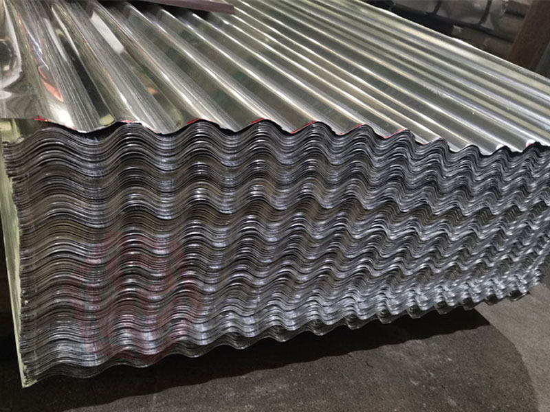
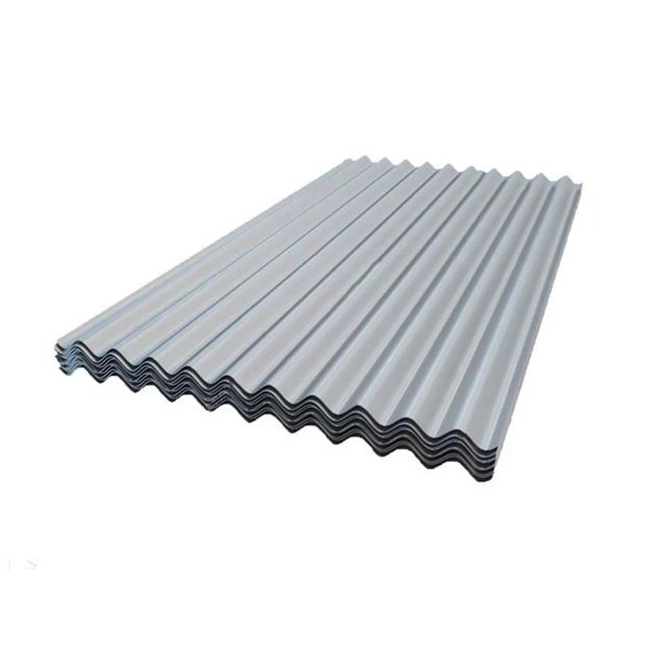

Modelos de láminas


Lámina metálica de fijación expuesta con perfil ondulado, ideal para techos inclinados y cubiertas ligeras. Ofrece buen drenaje, fácil instalación y adaptabilidad. Disponible en galvanizada, Aluzinc o esmaltada, para uso agrícola o comercial.
Calibres:
- C26 (0.38 mm)
- C28 (0.30 mm)
- C28 (0.21 mm)
Materiales:
- Galvanizada
- Aluzinc